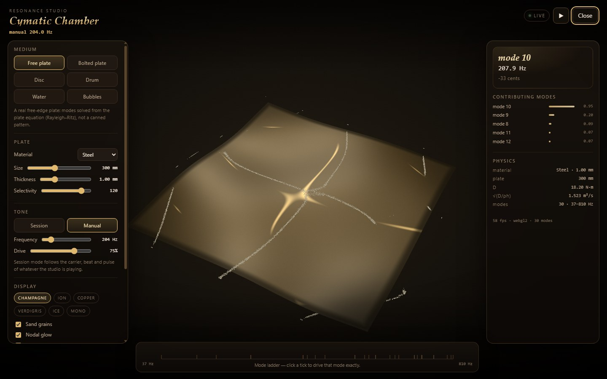
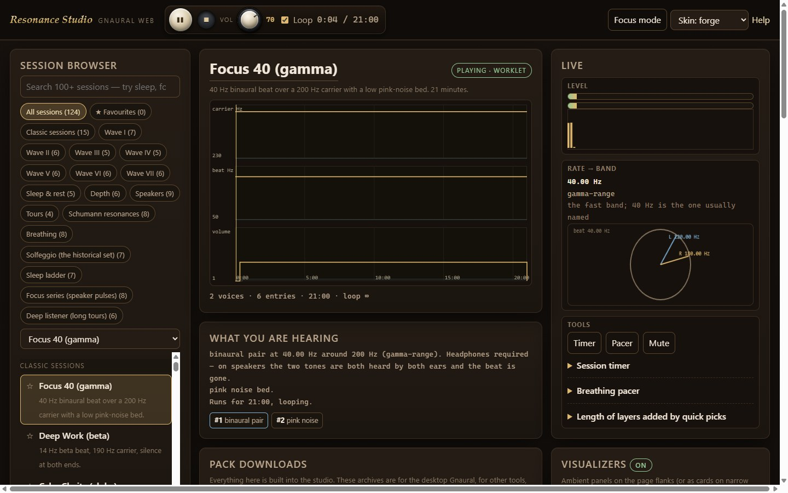
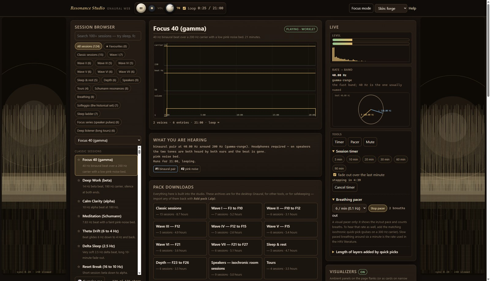
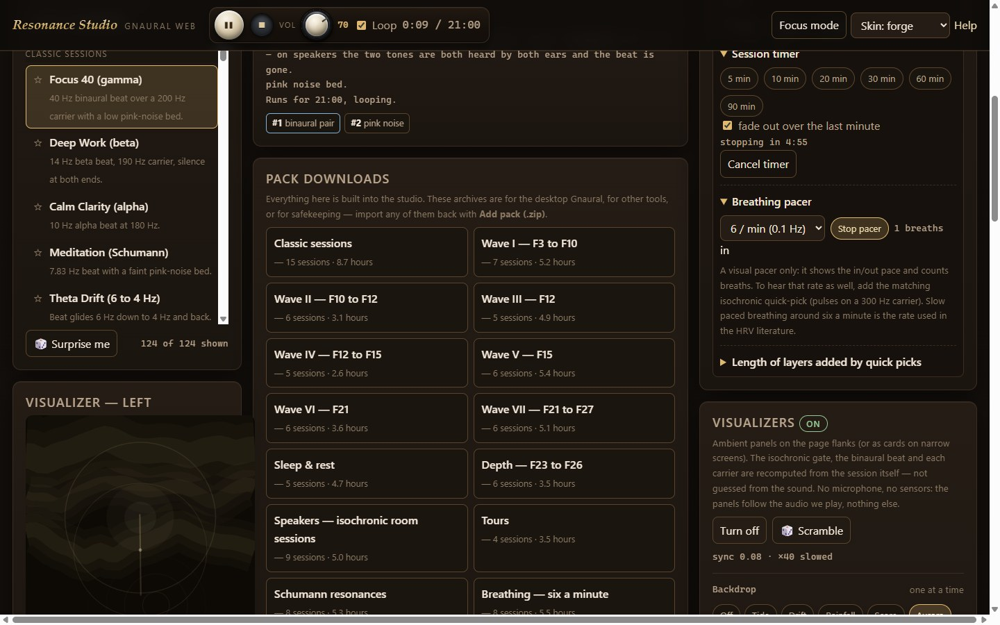
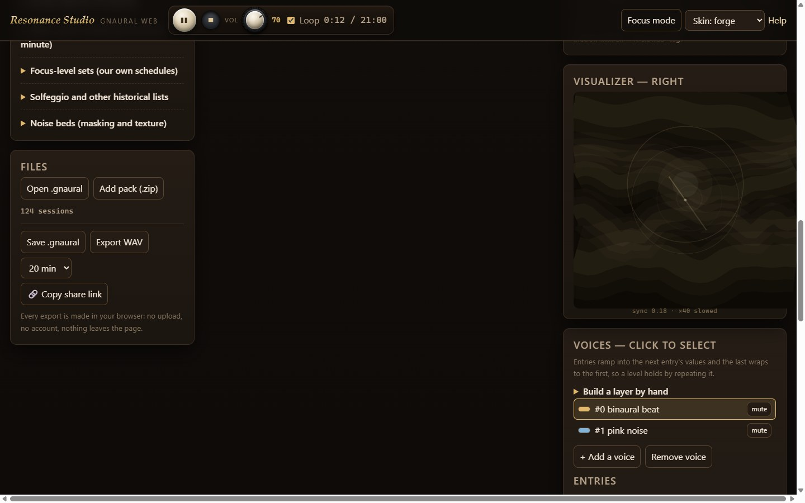

A resonance studio for tones, beats and noise.
Binaural pairs, monaural beats, isochronic pulses and three colours of noise — with a real schedule editor, a graph you can scrub, live meters and 124 ready-made sessions across 18 packs. It is a proper synthesis studio, not a video with a waveform: every session here is a set of voices and timed entries you can open, edit, export and rebuild.
Nothing is uploaded and nothing is tracked: the whole studio is this site's own code, running locally in the page.
Look inside the studio





.gnaural file, export a WAV, or copy a link that carries the whole session.What it does
The tone made visible
The Cymatic Chamber solves a real plate's modes from the plate equation and shows the figure your tone actually drives — Chladni sand on steel, Bessel figures on a disc, Faraday waves on water, bubble acoustics. Six media, a mode ladder, and the detuning in cents.
Six voice types
Binaural pairs (two tones, one per ear), monaural beats (two tones in both ears, beating in the room), isochronic pulses (one carrier switched on and off — speaker-friendly), and pink, brown and white noise beds. Stack any of them.
Ramps, not switches
Every value — volume, carrier, rate — glides into the next entry's value, and the last entry wraps to the first. Sessions can be minutes or hours, hold a level, slide a rate from 4 to 12 Hz over an hour, or fade a bed in under a voice.
124 sessions, 18 packs
Classic sessions, seven waves of focus layouts, sleep and nap sets, extended tours, deeper focus levels, a headphone-free speaker pack, and sets built from published physiological numbers — all original, all editable.
Built for long listening
A session timer that stops cleanly (with an optional one-minute fade), looping, a master volume, a stop-and-mute panic button, and a breathing pacer for slow paced breathing at six a minute.
Reader and writer
Opens .gnaural files from the desktop Gnaural, writes them back out again, imports
whole packs from .zip, and renders any schedule to a WAV file without leaving the page.
Links carry whole sessions
A schedule you built can be copied as a link that contains the session itself — no server, no account, nothing stored anywhere. Open the link and the same session is on the other machine.
Built for the whole field, not one corner of it
The quick-pick panel carries the numbers that turn up across this subject, each labelled with what it actually is:
Real physics, folk lists, and plain practice — kept apart
Measured numbers: the Schumann resonances (7.83, 14.3, 20.8, 27.3, 33.8 Hz) — electromagnetic standing waves in the Earth–ionosphere cavity, offered here as a representation, not a connection.
Practice: the ordinary EEG band names, the six-breaths-a-minute rate from the HRV literature, 40 Hz from the gamma-stimulation work.
Tradition: the solfeggio set and A = 432 Hz, presented with their 1990s provenance and with no medical claim attached.
Our own: focus-level tone layouts built from publicly documented frequency sets, named descriptively and shipped without any affiliation.
Read the evidence page → for the status of every one of these claims.
What is actually established, in one paragraph
A periodic tone does produce a measurable neural response phase-locked to its rate while the sound is playing — that is the frequency-following / auditory steady-state response, and it is well-documented. What is not established is that listening to a rate durably changes your brain state: the systematic review of 14 EEG studies found 5 in line with the entrainment hypothesis, 8 contradicting it and 1 mixed, concluding there was no clear trend either way.
This site builds a serious tool for the first half of that sentence and makes no claim about the second half. The claim ledger lists every number and every statement with its status.
Start here
1 · Pick the right output
Headphones for binaural pairs — the beat exists only in the difference between your ears. Any speaker for isochronic pulses and noise beds. The Speakers pack is built entirely with no headphone requirement.
2 · Set the level low
Audible but conversational. If you have to raise your voice to be heard at arm's length, it is too loud. Pulse trains read as more alerting than steady tones at the same level, so start lower than you think you need.
3 · Then build one
Open the studio, click a quick pick to stack a layer, edit its entries, hit Save .gnaural or Copy share link. The full manual is in Help.
Care. This is not a medical device and nothing here treats, cures or diagnoses anything. If you have epilepsy or a seizure disorder, ask a clinician before using repetitive pulsed tones. Keep levels conversational; long exposure to loud sound damages hearing. Do not use it where you need to hear what is going on around you — traffic, doorbells, children. Stop if it feels unpleasant.